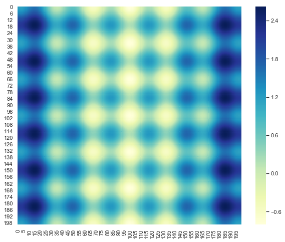
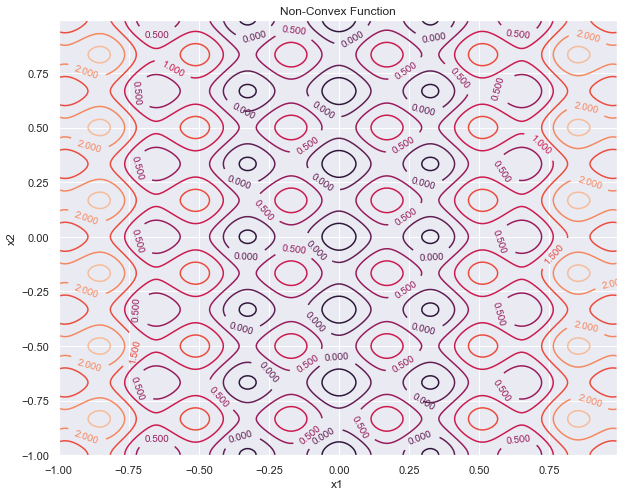
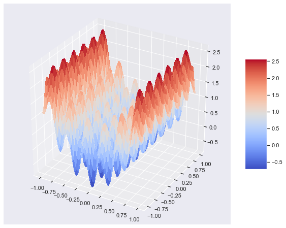
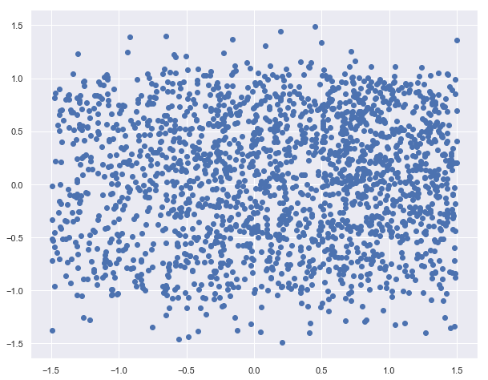
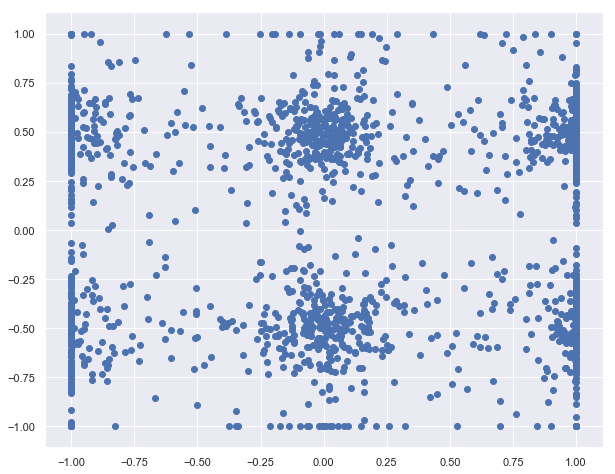
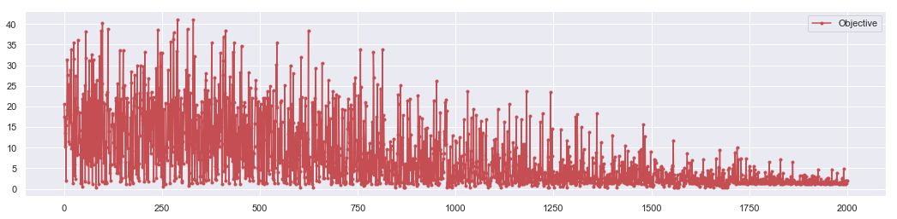
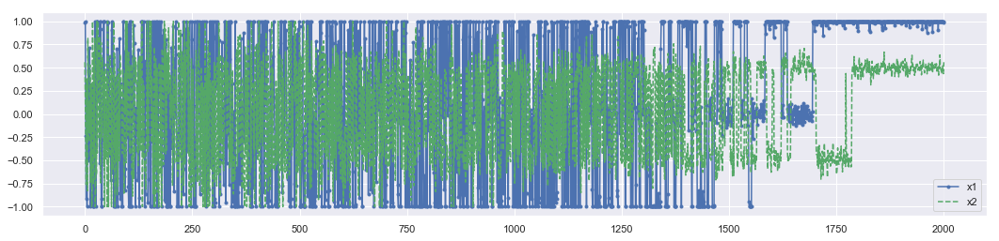

Meshgrid demo with Simulation
Meshgrid - Simulated Annealing
import numpy as np
import matplotlib.pyplot as plt
import random as random
import seaborn as sns
sns.set()
Example : Simulated annealing
$$V(x) = V_{o}\left \lbrace nA + \sum_{i=1}^{n}[x_{i}^{2} - A \cos(6\pi x_{i})]\right \rbrace$$
$$n =2, A = 0.1, V_o = 1.0$$
$$Z = 0.2 + x^2 + y^2 -0.1 \cos(6 \pi x) - 0.1\cos(6 \pi y)$$
# Design variables at mesh points
ns = 100
xs = np.arange(-1.0, 1.0, 1/ns)
ys = np.arange(-1.0, 1.0, 1/ns)
XG,YG = np.meshgrid(xs, ys)
ZG = 0.2 + xs**2 + ys**2\
- 0.5*np.cos(6.0*np.pi*XG)\
- 0.5*np.cos(6.0*np.pi*YG)
1. Heat Map
plt.figure(figsize = [10,8])
sns.heatmap(ZG, annot =False,cmap ="YlGnBu")
<matplotlib.axes._subplots.AxesSubplot at 0x2489e758978>

2. Contour plot
plt.figure(figsize =[10,8])
# Create a contour plot
CS = plt.contour(XG, YG, ZG)
plt.clabel(CS, inline=1, fontsize=10)
plt.title('Non-Convex Function')
plt.xlabel('x1')
plt.ylabel('x2')
Text(0, 0.5, 'x2')

3. 3D plot
from mpl_toolkits.mplot3d import Axes3D
from matplotlib import cm
fig = plt.figure(figsize = [10,8])
ax = fig.gca(projection='3d')
# Plot the surface.
surf = ax.plot_surface(XG, YG, ZG,\
cmap=cm.coolwarm,\
linewidth=0,\
antialiased=False)
# Add a color bar which maps values to colors.
fig.colorbar(surf, shrink=0.5, aspect=5)
plt.show()

Simulate the Annealing Process
def potential(x1,x2):
obj = (2*10.0) + x1**2 + x2**2 - (10.0)*(np.cos(2.0*np.pi*x1) - np.cos(2.0*np.pi*x2))
return obj
Setting up the parameters
# Start location
x_start = [0.5, -0.5]
#Number of particles
N = 2000
# Number of cycles
n = 2000
# Number of trials per cycle
m = 1000
# Number of accepted solutions
na = 0.0
# Probability of accepting worse solution at the start
p1 = 0.7
# Probability of accepting worse solution at the end
p50 = 0.001
# Initial temperature
t1 = -1.0/np.log(p1)
# Final temperature
t50 = -1.0/np.log(p50)
# Fractional reduction every cycle
frac = (t50/t1)**(1.0/(n-1.0))
# Initialize x, particle coordinates
x = np.zeros((n+1,2))
x[0] = x_start
# dynamic xi
xi = np.zeros(2)
xi = x_start
na = na + 1.0
# Current best results so far
xc = np.zeros(2)
xc = x[0]
fc = potential(xi[0],xi[1])
fs = np.zeros(n+1)
fs[0] = fc
# Current temperature
t = t1
# DeltaE Average
DeltaE_avg = 0.0
Performing Simulation
X0 = []
Y0 = []
for i in range(n):# number of cycle
#print('Cycle: ' + str(i) + ' with Temperature: ' + str(t))
for j in range(m):# number of trial
# Generate new trial points
xi[0] = xc[0] + random.random() - 0.5
xi[1] = xc[1] + random.random() - 0.5
# collect initial configuration
if j == 0:
X0.append(xi[0])
Y0.append(xi[1])
# Clip to upper and lower bounds
xi[0] = max(min(xi[0],1.0),-1.0)
xi[1] = max(min(xi[1],1.0),-1.0)
DeltaE = abs(potential(xi[0],xi[1])-fc)
#Metropolice step
if (potential(xi[0],xi[1])>fc):
# Initialize DeltaE_avg if a worse solution was found
# on the first iteration
if (i==0 and j==0): DeltaE_avg = DeltaE
# objective function is worse
# generate probability of acceptance
p = np.exp(-DeltaE/(DeltaE_avg * t))
# determine whether to accept worse point
if (random.random()<p):
# accept the worse solution
accept = True
else:
# don't accept the worse solution
accept = False
else:
# objective function is lower, automatically accept
accept = True
if (accept==True):
# update currently accepted solution
xc[0] = xi[0]
xc[1] = xi[1]
fc = potential(xc[0],xc[1])
# increment number of accepted solutions
na = na + 1.0
# update DeltaE_avg
DeltaE_avg = (DeltaE_avg * (na-1.0) + DeltaE) / na
# Record the final best x values at the end of every cycle
x[i+1][0] = xc[0]
x[i+1][1] = xc[1]
fs[i+1] = fc
# Lower the temperature for next cycle
t = frac * t
Result
plt.figure(figsize=(10, 8))
plt.scatter(X0,Y0)
#plt.savefig('inital-config.png')
plt.show()
<matplotlib.collections.PathCollection at 0x248a0938f98>

plt.figure(figsize=(10, 8))
plt.scatter(x[:,0],x[:,1])
#plt.savefig('final-config.png')
plt.show()
Best solution: [0.99151835 0.55916777]
Best objective: 1.9928084246547968
<matplotlib.collections.PathCollection at 0x248a1c58588>

plt.figure(figsize=(18, 4))
plt.plot(fs,'r.-')
plt.legend(['Objective'])
#plt.savefig('iterations.png')
plt.show()

plt.figure(figsize=(18, 4))
plt.plot(x[:,0],'b.-')
plt.plot(x[:,1],'g--')
plt.legend(['x1','x2'])
#plt.savefig('iterations.png')
plt.show()
<matplotlib.legend.Legend at 0x248a214fa90>
